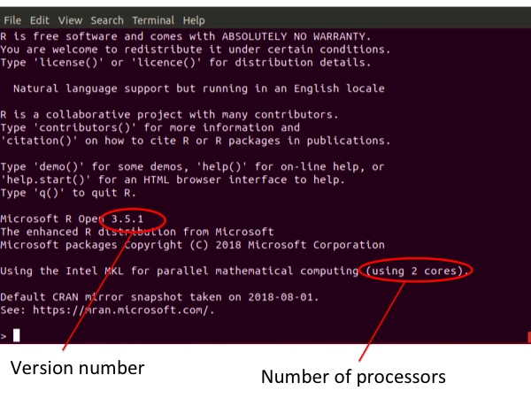

Eagle for Linux
A How To guide for installing multi-threaded R and Eagle
Purpose of this guide
Eagle is built with the R language. R, by default, is installed for single-thread computation. However, it is possible to replace R’s default single-thread math libraries with multi-threaded libraries. In doing so, many of R’s linear algebra operations become implicitly parallelized. We have purposely built Eagle to take full advantage of this implicit parallelisation.
In this guide, we will show you how to install R for multi-threaded computation. Once R is installed, it is then simple to install Eagle.
What you need
You will need administrator privileges. That is, you will need to be able to run the sudo (superuser do) command. This gives the installation script write access to write-protected parts of the system. You will also need the library libpng12 (see Step 1 below).
It would also be advantageous if you have had previous experience with installing R packages.
Systems Tested
We have tested our installation procedure on the linux distributions Fedora, Red Hat Enterprise Linux (RHEL), Debian, openSUSE, and Ubuntu. For each distribution, we started with a clean install. Hence, you may not need to install all the packages listed in Step 1 . It will depend upon the state of your system.
| Distribution | Version |
|---|---|
| Fedora | 24, 25, 26 Beta |
| RHEL | 6.8, 6.9, 7.1, 7.2, 7.3, 7.4 |
| Fedora | 24, 25, 26 Beta |
| Debian | 8.8 (Jessie) & 9.0 (Stretch) |
| openSUSE Leap | 42.1 (Malachite) & 42.2 |
| Ubuntu | 14.04.5 LTS (Trusty Tahr), 16.04.2 LTS (Xenial Xerus) & 17.04 (Zesty Zapus) |
Step 1: Getting your System Ready

For the following steps to work, your system needs the reference library libpng12, a c++ compiler, and a Fortran compiler. If you don't have these on your system already, fortunately they are freely available and easy to install.
Installation of libpng12
Libpng is a reference library containing functions to read, create, and manipulate PNG image files. You need the libpng12 version on your system. A different version will not suffice.
To install libpng12, from a terminal, type the following
sudo yum install libpng12 Installation of a C++ compiler
To install a C++ compiler, open a terminal and type the followingsudo yum install gcc-c++ Installation of a Fortran compiler
To install a Fortran compiler, open a terminal and type the followingsudo yum install gcc-gfortran 
For the following steps to work, your system needs the reference library libpng12, a c++ compiler, and a Fortran compiler. If you don't have these on your system already, fortunately they are freely available and easy to install.
Installation of libpng12
Libpng is a reference library containing functions to read, create, and manipulate PNG image files. You need the libpng12 version on your system. A different version will not suffice.
To install libpng12, from a terminal, type the following
sudo yum install libpng12 If you receive an error regarding not being registered to the Red Hat Subscription Management system, type
sudo subscription-manager register –-username <username> --password <password> --auto-attach Your <username> and <password> is the username and password you used to register via the redhat customer portal
Once you have registered your system with Red Hat, rerun the command to install libpng12
Installation of a C++ compiler
To install a C++ compiler, open a terminal and type the followingsudo yum install gcc-c++ Installation of a Fortran compiler
To install a Fortran compiler, open a terminal and type the followingsudo yum install gcc-gfortran 
For the following steps to work, your system needs the reference library libpng12, a c++ compiler, and a Fortran compiler. If you don't have these on your system already, fortunately they are freely available and easy to install.
Installation of libpng12
Libpng is a reference library containing functions to read, create, and manipulate PNG image files. You need the libpng12 version on your system. A different version will not suffice.
To install libpng12, from a terminal, type the following
sudo apt-get install libpng12-0
deb http://ftp.debian.org/debian/ jessie main non-free
deb-src http://ftp.debian.org/debian/ jessie main non-free
and save the file. You will need administrator privileges to save this file to this directory. This adds the repository that contains the libpng12 library.
Update the package listings in the repositories by running
sudo apt-get update Once the above command has finished updating, install libpng12 again with
sudo apt-get install libpng12-0 Installation of a compiler for C++
To install a compiler for C++, open a terminal and type the following
sudo apt-get install build-essential Installation of a compiler for Fortran
To install a compiler for Fortran, open a terminal and type the following
sudo apt-get install gfortran 
For the following steps to work, your system needs the reference library libpng12, the
make command, and the C++ and Fortran compilers.
If you don't have these on your system already, fortunately they are freely available and
easy to install.
Installation of libpng12
Libpng is a reference library containing functions to read, create, and manipulate PNG image files. You need the libpng12 version on your system. A different version will not suffice.
To install libpng12, from a terminal, type the following
sudo zypper install libpng12-0 Installation of the make command
To install the make command, from a terminal and type the following
sudo zypper install gmake Installation of a compiler for C++
To install a compiler for C++, from a terminal and type the following
sudo zypper install gcc-c++ Installation of a Fortran compiler
To install a Fortran compiler, from a terminal and type the following
sudo zypper install gcc-fortran Tricking our installation procedure
Our installation procedure was designed to run on SUSE Enterprise. As such, it looks for a file called SuSE-brand which does not exist in openSUSE. The work around though is easy. Just type the following (making sure you type SuSE and not SUSE)
sudo cp /etc/SuSE-release /etc/SuSE-brand 
For the following steps to work, your system needs the reference library libpng12, a c++ compiler, and a Fortran compiler. If you don't have these on your system already, fortunately they are freely available and easy to install.
Installation of libpng12
Libpng is a reference library containing functions to read, create, and manipulate PNG image files. You need the libpng12 version on your system. A different version will not suffice.
To install libpng12, from a terminal, type the following
sudo apt-get install libpng12-0
deb http://mirrors.kernel.org/ubuntu xenial main universe
and save the file. You will need administrator privileges to save this file to this directory. This adds the repository that contains the libpng12 library.
Update the package listings in the repositories by running
sudo apt-get update Once the above command has finished updating, install libpng12 again with
sudo apt-get install libpng12-0 Installation of a compiler for C++
To install a compiler for C++, open a terminal and type the following
sudo apt-get install build-essential Installation of a compiler for Fortran
To install a compiler for Fortran, open a terminal and type the following
sudo apt-get install gfortran Step 2: Download R Open
Installing a multi-threaded version of R is now much easier with Microsoft R Open. R Open behaves exactly the same as R, except, by default, it comes with multi-threaded math libraries.
Go to the Microsoft R Open web site and download the version of R Open that corresponds (closest) to your system. If your system is not listed, pick the distribution closest to your operating system. For example, select SUSE for openSUSE, Red Hat Enterprise Linux for Fedora, and Ubuntu for Debian.
Step 3: Uncompress microsoft-r-open-3.4.0.tar.gz
First, create (mkdir) a separate directory in which to uncompress the R Open files.
mkdir ~/RHome Second, move (mv) microsoft-r-open-3.4.0.tar.gz from the Downloads directory into the newly created ROpen directory.
mv ~/Downloads/microsoft-r-open-3.4.0.tar.gz ~/ROpen/. Third, change directory (cd) into ~/ROpen and extract the files via the tar xvfz command. This will create a new directory in ~/ROpen called microsoft-r-open
cd ~/ROpen
tar xvfz microsoft-r-open-3.4.0.tar.gz
Step 4: Run ./install.sh as sudo to install R Open
First, change directory into the microsoft-r-open directory
cd ~/ROpen/microsoft-r-open Second, run the installation script install.sh as sudo. You will be prompted to enter your administrator password.
sudo ./install.sh Third, follow the instructions where
- ENTER to display the Microsoft R Open license and MKL license,
- q to close the license
- y to agree to the licenses and install files.
Step 5: Only needed if a previously installed version of R is on your system
Place the following at the end of your .bashrc file (the dot in front of the bashrc name means that it is a hidden file).
export PATH=/usr/lib64/microsoft-r/3.4/lib64/R/bin:$PATH As part of the installation process for R Open, a link to the executables R and Rscript is created in /usr/bin/. Since these files already exist if R has already been installed, an error occurs which is reported in ~/ROpen/microsoft-r-open/logs/mro.txt. The solution is to change the environment variable PATH by putting the directory containing the R Open executable at the beginning of the listed directories (directories in PATH are searched sequentially).
Step 6: Run R Open
To run R Open, it is best to run it with administrator privileges. From a terminal, type the following
sudo env “PATH=$PATH” R The following with then appear
Step 7: Installation of the Eagle package
To install the Eagle package, from the R command window, use the install.packages( ) command
install.packages("Eagle", dependencies=TRUE) You will be asked to select a CRAN mirror. Once selected, Eagle and any missing packages upon which Eagle is dependent will begin to be installed.